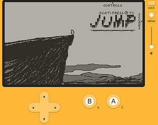

The Blog
Scrythe
Luc Walz
Scrythe is a wizard roguelike I am building with some friends of mine. It's to be a dungeon crawler where you play as an apprentice mage locked within a seemingly unremarkable dungeon. Your only direction down, you descend in hopes of finding another way out. I am in the most extreme early stages of prototyping this idea, and the above image reflects that. We haven't quite landed on an artstyle for the game, but I have some ideas for post processing that will look a lot more 'dungeon-y' than the toon shading that exists now. Aside from that, I am currently workign to get the game's basic, underlying systems implemented so I can get a first playtest out to friends and get them familiar with the idea.
To explore different experiences that we want to allow in Scrythe, we plan to have a handful of different casting tools. Each type will have different styles of play, with unique utilities and basic spell types assigned them. These abilities will align with the feeling we want each casting tool to evoke. For example, we'll have:
| Casting Tools | Basic Spell | Utility |
|---|---|---|
| Staffs | Beam | Teleport |
| Wands | Burst | Dodge |
| Orbs | Dart | Parry |
| Tomes/Grimoires | Burst, Blast | Transfigure |
| Gauntlets | Blast | Bulwark |
| Rings | Chain | Shift |
Jump
Luc WalzJump is a game I programmed on Panic's Playdate handheld console. My introduction to Lua, I had a blast making this game. It's an endless runner in which you play as a mage/wizard, using Playdate's crank feature to rotate and casting fireballs to propel yourself in any direction over open ocean. With a limited number of slowly recharging fireballs, you must conserve charges by firing on passing razorbills, or hitching rides on the backs of albatross. You also have another ability aside from propelling charges, jumping. A jump will save you from death, giving height away from the deadly ocean, but comes at a price. Each jump will tip the game's difficulty scale, more danger means more dense bird spawns, as well as a higher chance to be struck by a stray lightning bolt.
The Playdate is a super neat little console. I love it for just fidgeting with a classic gaming experience. Panic makes it super easy to develop for this little guy too. I wrote this game almost entirely in Lua using the Playdate SDK in Visual Studio, but Panic provides an alternative called Playdate Pulp. Pulp is web-based game-maker that allows users to draw, animate, create fonts & sound, and edit levels too! I used Pulp's chiptune editor to make the sound effects in this game.